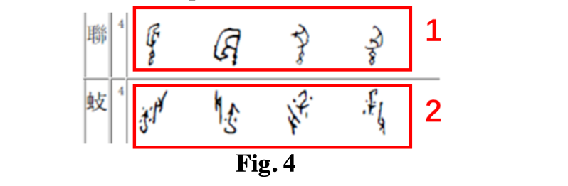
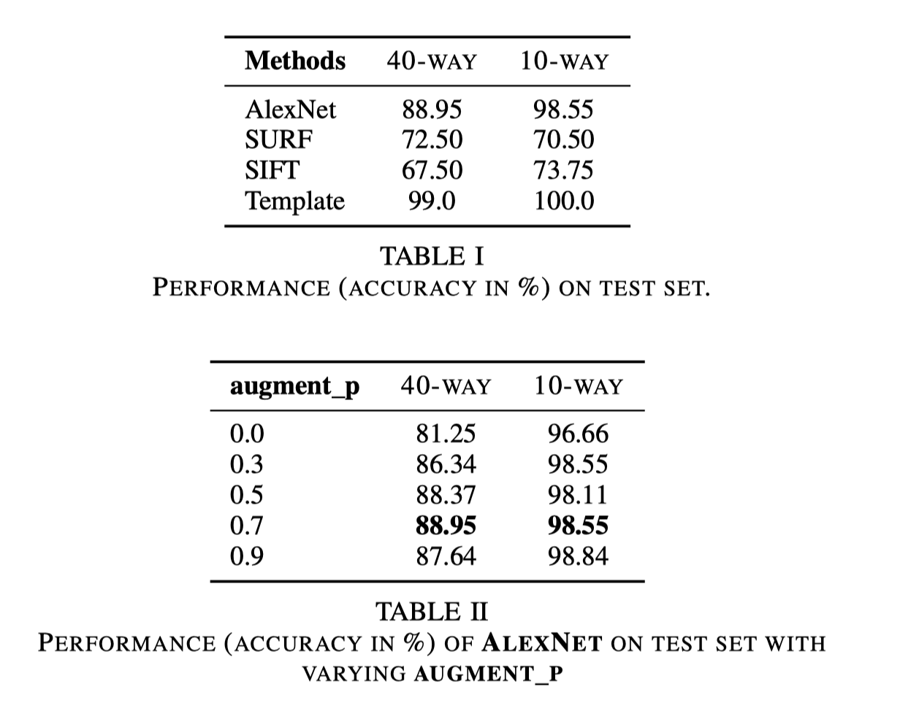
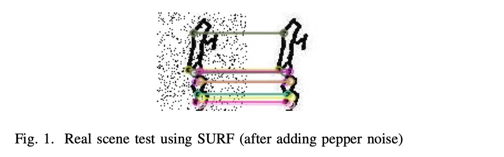
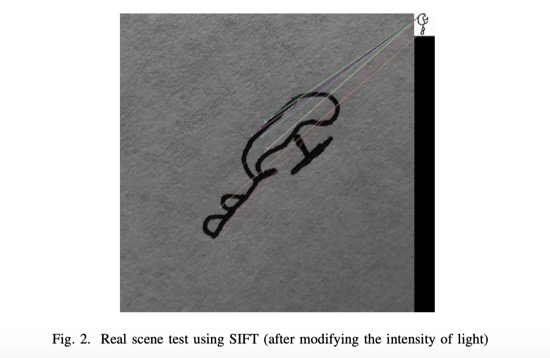

Oracle Bone Character Recognition

Introduction
Oracle bone inscriptions (OBIs) are some of the oldest characters of Chinese words, which were hieroglyphic signs inscribed onto cattle bones or turtle shells with sharp objects about 3000 years ago. OBIs are very important to exploit the political systems, economic status and social lives of Shang Dynasty (about 1600 B.C. -1046 B.C.), the first dynasty recorded by Chinese words found so far. However, few people have the literacy of OBIs. The recognition of OBIs, which interdisciplinarily combines archaeology, history, philology and literature, requires people to have plenty of knowledge and years of experiences.
Data set

Models
- CNN: We adapt AlexNet, altering its kernel sizes, paddings, numbers of channels, and strides, for this task.
- SIFT/SURF: We adopt two methods for scale and rotation invariant interest point/feature detector and descriptor: Scale Invariant Feature Transform (SIFT) and Speed Up Robust Features (SURF). After extracting features, we perform a quick and efficient matching by using the FLANN (Fast Approximate Nearest Neighbor Search Library).
- Template matching is a technique for finding areas of an image that match (are similar) to a template image (patch). Template matching works by “sliding” the template across the original image. As it slides, it compares or matches the template to the portion of the image directly under it.
Experiment Results:

Real Scence Tests:
 
Lingjia Li
First-year Master Student
My research interests include data analytics and visualization,digital media, HCI and information systems.